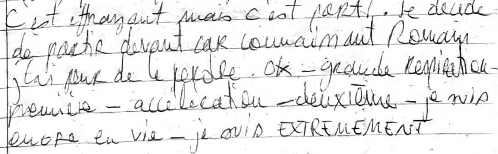
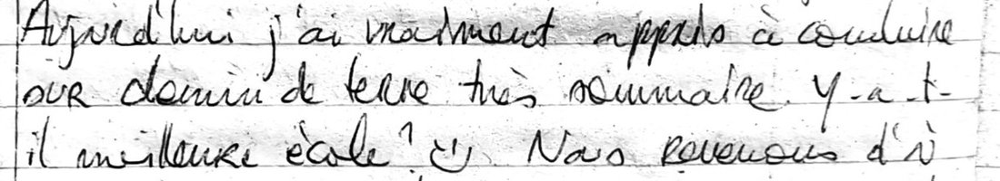
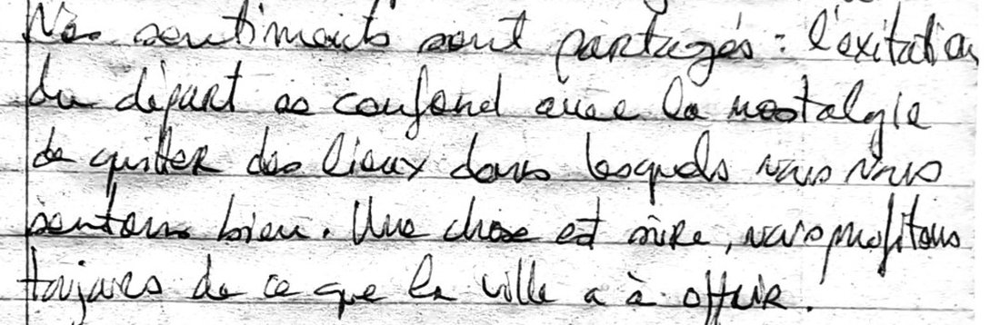

Chapitre 4 · 18 – 29 novembre 2011
La virée à moto
Cinq jours sur les routes de l'est, jusqu'à la frontière tibétaine et Jiri, puis Katmandou une dernière fois
À l'Everest, nous avions un guide et des lodges ; au Dhaulagiri, plus de guide ni de porteur. Pour la fin du voyage, nous avons retiré un filet de plus : deux motos louées à Thamel, sans papiers ni assurance, contre un passeport laissé en caution. Je n'avais jamais conduit de moto, et je n'avais pas de permis. Pendant cinq jours, nous avons roulé vers l'est, jusqu'à la frontière du Tibet puis jusqu'à Jiri, en plantant la tente chaque soir là où le paysage nous retenait. Puis il y eut Katmandou une dernière fois, une ville devenue un peu la nôtre, et le départ.
Retour18 novembre 2011
Notre quartier préféré
Pokhara → Katmandou
- bus pour Katmandou, départ 7 h 30
- chambre avec salle de bain, Freak Street · 350 Rps
Le réveil à 5 h 30 fut un peu difficile. Sacs bouclés, nous avons traversé au lever du jour les rues tranquilles de Pokhara jusqu'à la gare routière. Places réservées, bus à l'heure : tout se déroulait bien. À 7 h 30, nous partions, quelques biscuits pour la route. Pendant le trajet, je lisais Annapurna, premier 8000, et j'y retrouvais l'ambiance du tour du Dhaulagiri et du sanctuaire : à peu de chose près, nous avions suivi le même chemin que la première expédition française, en 1950. Dehors, il pleuvait. Une fois de plus, nous avions la chance d'être dans un bus pendant que le ciel se vidait.
Le bus nous a laissés dans un quartier inconnu de Katmandou, mais nous avons retrouvé sans peine Freak Street, notre quartier préféré. Trouver un hôtel bon marché fut plus compliqué. Nous avons fini par prendre une chambre propre, avec salle de bain, pour 350 roupies : un grand luxe, que nous ne nous étions plus offert depuis notre tout premier jour au Népal.
Nos habitudes sont vite revenues : flâner dans les rues à la recherche de beignets et de plats népalais que nous ne connaissions pas encore. Un délicieux beignet de lentilles et de légumes à 2 roupies, puis d'autres à une roupie. Et soudain, nez à nez avec Juan, l'ami espagnol rencontré à Sinuwa une semaine plus tôt. Quelle surprise ! Nous avons parlé un long moment. Il m'a donné de quoi finir de me rétablir, et nous nous sommes promis de dîner ensemble au retour de son trek dans le Langtang. Nous, nous gardions notre objectif : un voyage à moto. Dès le lendemain, nous irions nous renseigner sur la location. Le soir, un délicieux dal bhat dans la cantine en face de l'hôtel, pour 60 roupies, et nous sommes allés nous coucher, fatigués.
Veille du départ19 novembre 2011
Trois gestes à connaître
Freak Street → Thamel, puis un premier tour de nuit
- Hero Honda 125 cm³ et Pulsar · 400 Rps par jour et par moto
- rendez-vous chez le loueur à 17 h
C'était samedi, l'équivalent de notre dimanche, et la rue s'éveillait à peine. Petit déjeuner de beignets et de milk tea : trop de beignets, trop d'huile, nous étions lourds. Puis direction Thamel, où se concentrent les loueurs de motos. Après une étude de marché approfondie, nous avons choisi une Hero Honda de 125 cm³ et une Pulsar, à 400 roupies par jour et par moto. Il fallait revenir les chercher à 17 heures.
Nous étions surexcités, et complètement inconscients. Je n'avais aucune idée de la façon de conduire une moto ni d'en tenir le poids : je n'en avais jamais conduit, et je n'avais pas de permis. Seulement la photocopie de celui d'un ami de Romain, qui par chance me ressemblait un peu. J'espérais vivement ne pas être contrôlé. L'après-midi était douce, le beau temps revenait. Nous avons commandé chacun un jean taillé sur mesure, qui nous attendrait au retour, et j'ai craqué pour un costume, lui aussi sur mesure, dans une belle toile gris anthracite.
À 17 heures, le moment tant attendu et tant redouté. Au magasin, on ne nous demandait qu'une chose en échange des deux motos : un passeport original. Les motos n'avaient pas de papiers, pas d'assurance. Rien d'autre que notre identité. J'ai donné le mien : ainsi, en cas de contrôle de police, je n'aurais pas à justifier de mon identité. À partir de cet instant, je m'appelais Alban, et il me restait à apprendre mon nom de famille et ma date de naissance.
Le loueur, pressé de retourner à ses affaires, a déposé les deux motos dans la rue et nous a montré les trois manipulations à connaître. Nous nous sommes retrouvés seuls avec ces deux lourds engins, au milieu de Thamel, le plus gros quartier touristique de la ville, dans un trafic dense. Nous les avons poussées à la main jusqu'à une rue étroite, reculée, isolée. C'est là que nous avons appris à conduire. Un coup de kick, l'embrayage, la première, un coup d'accélérateur de la main droite en relâchant doucement l'embrayage de la main gauche. La moto avançait par à-coups, et j'arrivais maladroitement au fond de la ruelle. Je recommençais, pour faire de ce geste un réflexe : j'allais devoir le répéter mille fois les jours suivants. En roulant au pas, les deux jambes juste au-dessus du sol, je savais que j'étais incapable du moindre réflexe de freinage. Il fallait pourtant l'apprendre, et vite : au Népal, la circulation est chaotique. J'avais peur. Et j'oubliais de le dire : il faisait nuit.
La moto de Romain était déjà en panne : le kick ne marchait plus et elle calait. Un coup de téléphone, et on nous l'a échangée contre une Pulsar dernier cri, mais aussi plus effrayante. Après dix minutes d'allers-retours, il a fallu se lancer sur la route. Nous n'avions pas le choix : nos réservoirs étaient presque vides, il fallait trouver une station-service. J'étais très réticent. La nuit, le trafic, les klaxons, et sur la chaussée un mélange de voitures, de motos, de vélos, de pousse-pousse, de piétons et de chiens. Je suis parti devant : connaissant Romain, j'avais peur de le perdre.

… extrêmement concentré, conscient du danger. Et jusque-là, nous nous débrouillions vraiment bien. Les rues devenaient de plus en plus larges, le trafic de plus en plus dense, le désordre indescriptible. Ce désordre, au fond, nous aidait : il nous forçait à rester vigilants et très lents, et dans un tel chaos, un mauvais conducteur passe inaperçu. Les stations-service sont rares au Népal. Il nous a fallu demander à plusieurs personnes, et une demi-heure, pour en trouver une. Le plein fait, nous avons repris la direction de l'hôtel, à travers le désordre hallucinant de Ratna Park. J'ai fini par suivre Romain, qui se repérait mieux que moi : j'étais tout entier à ma conduite. Puis j'ai pris l'engin en main, et j'ai été infiniment heureux d'arriver à Freak Street.
Je n'osais pas en parler à mes parents. Inconscience ou danger mesuré ? Je ne savais pas. Mais j'étais heureux de savoir conduire une moto, en plein Katmandou, et de nuit. Le lendemain, nous partirions à 6 heures pour éviter la circulation. À nous la route, à nous l'est du Népal.
Jour 120 novembre 2011
La plage de sable blanc
Katmandou → Bhaktapur → col de Nagarkot → Dowa Pati → au bord de la rivière
- départ 6 h · 9 h de moto, entre 30 et 40 km/h
- 1er bivouac, sur une plage de sable au bord de la rivière
Le soir, j'étais trop fatigué pour écrire, et pourtant c'était une journée à raconter. Levés à 6 heures, nous sommes partis aussitôt. Les rues de Katmandou étaient calmes et nous avons bien trouvé la sortie. Mes réflexes de la veille revenaient doucement, pas tous : j'ai calé au milieu d'une grande rue de Ratna Park, que je m'apprêtais à prendre à contresens. Heureusement, il n'y avait pas grand monde.
Peu de routes goudronnées relient les villes entre elles, et elles sont très fréquentées. Calés sur la gauche, puisqu'on roule à gauche au Népal, nous avancions doucement et régulièrement, entre 30 et 40 km/h. Premier arrêt un peu en dessous de Bhaktapur, pour un petit déjeuner de bananes, de biscuits et de milk tea. Nos mains étaient glacées par la fraîcheur du matin, mais la journée s'annonçait splendide, et le soleil s'est vite découvert.
Vingt kilomètres de montée nous ont menés au col de Nagarkot, d'où l'on voit le centre de la chaîne himalayenne. Le soleil perçait à travers les arbres, il faisait doux, et cela me rappelait les cols des Alpes : c'était magnifique, et bien moins fatigant pour les jambes. Ma concentration, elle, était au maximum, au point d'en avoir mal à la tête. Nous avons ensuite pris une route secondaire, par Dowa Pati. Le chemin, de terre et de pierres brutes, s'est vite transformé en piste de VTT : nous glissions dans la boue, nous calions dans les côtes. Mais il traversait aussi des passages plats au milieu des rizières, et le paysage était très beau.
À midi, après déjà cinq heures de moto, une pause bien méritée : pour un euro à deux, un gros chowmein chacun, un thé et un dessert. Le rêve. Nous avons repris la route en direction de Jiri, vers l'est, en évitant désormais les pistes. La grand-route, rejointe à regret, s'est révélée très belle, authentique et de bonne qualité, tout est relatif. Je prenais de plus en plus d'aisance avec les vitesses, les freins, les dépassements, tout en restant extrêmement vigilant. La conduite népalaise est lente, comparée à la nôtre, et cela me laissait le temps de réfléchir et d'anticiper. Les lacets se succédaient, en montée, en descente : très beau, et très fatigant.
Après neuf heures de moto, nous nous sommes arrêtés près d'une rivière que nous suivions depuis longtemps et qui nous attirait. La lumière était extraordinaire, le cadre sublime. Les versants passaient de la jungle aux rizières. Au bord des routes séchaient des pousses de riz et poussaient des bananiers ; des écoliers partout, et des poules, des chèvres, des vaches qui traversaient sans prévenir. Une journée pleine de belles images, et de rencontres amusantes à chaque pause.
Nous avions trouvé un endroit paradisiaque : un petit bout de sable fin et blanc, à cinquante centimètres de l'eau. Notre premier camping sauvage.
La police et l'armée étaient très présentes sur la route, mais ne semblaient pas s'intéresser à nous : nous n'avions croisé aucun autre touriste. La nuit précédente, Romain avait été malade, lui que je commençais à croire invincible. Le soir, il était remis, et il n'avait rien changé à nos plans. Chapeau. Nous retrouvions les joies du camping et nos sacs de couchage. J'étais exténué, et j'avais besoin de cette nuit pour intégrer tout ce que j'avais appris dans la journée.
Jour 221 novembre 2011
La ligne au sol
Bord de la rivière → Barabise → Kodari, frontière tibétaine → crête de pins sur la route de Jiri
- départ vers 8 h 30 – 9 h
- bivouac sur une crête de pins
Nous nous sommes réveillés dans l'humidité la plus complète. La vallée était noyée dans un brouillard épais, et l'arbre qui nous abritait nous déversait la rosée du matin, goutte après goutte, sur le visage. Le cadre restait beau, et nous avons pris le temps du petit déjeuner : tsampa de blé au miel, muesli et thé. Un délice.
Vers 8 h 30, nous avons pris la route du Tibet. Elle longeait la frontière avec la Chine, que dessinait un fleuve puissant. Il faisait beau, et la route était bonne jusqu'à Barabise. Ensuite, comme l'annonçait la carte, le goudron alternait avec une piste de terre défoncée, boueuse par endroits, très pierreuse ailleurs. Nous traversions des cours d'eau, en gardant l'œil sur les bus qui roulaient à l'arrache.
À l'heure du déjeuner, nous sommes arrivés à la frontière, à Kodari. La ville était en effervescence, posée tant bien que mal le long d'une route explosée. Les marchandises s'entassaient sur les bas-côtés, la file des camions s'allongeait. Nous avons garé les motos et nous sommes avancés timidement. Au loin se dessinait une grande ville étagée en terrasses, à l'architecture tibétaine. Après deux lignes de gardes, nous sommes arrivés à la frontière elle-même : une ligne tracée au sol, gardée par deux soldats chinois. Photos interdites. Nous avons fait demi-tour, heureux d'avoir atteint notre objectif.
Cinq minutes de moto plus loin, nous avons déjeuné sur un point de vue, face à une grande cascade, côté chinois. Je commençais sérieusement à prendre la moto en main, sans cesser d'être attentif à tout.

Nous sommes revenus jusqu'à notre point de départ du matin, puis nous avons pris la route de Jiri. Après trois quarts d'heure d'une montée abrupte en lacets, nous avons commencé à guetter un endroit pour la nuit. Un chemin nous a menés sur une crête plantée de pins. Le soleil commençait à se coucher, la lumière était belle, nous étions fatigués : nous avons décidé d'y établir notre camp. Très bonne décision.
La vue sur la vallée était magnifique, l'endroit très accueillant ; sa végétation nous faisait penser au Morgonnet, la petite montagne qui domine notre maison de famille, au-dessus du lac de Serre-Ponçon. En dix minutes, la tente était montée, et nous nous sommes installés confortablement pour regarder le soleil se coucher. La journée s'était très bien passée, nous étions contents. Une fois la nuit tombée, allongés dans la tente, nous pouvions voir le ciel étoilé.
Jour 322 novembre 2011
La terrasse de mousse
Crête de pins → les lacets de la route de Jiri → une terrasse cachée de la route
- course à pied à l'aube · déjeuner à 11 h
- bivouac caché sur une terrasse de mousse et d'herbe
Quand j'ai ouvert un œil, le jour se levait. La cime des arbres se dessinait dans un ciel encore bleu pâle, avec au loin une légère teinte orangée. Il ne faisait pas froid, l'air était sec. Si je me levais, autant aller courir : tout m'y invitait, et depuis notre arrivée au Népal, je n'avais pas couru une seule fois. Un caleçon, un tee-shirt, et deux minutes plus tard j'étais dehors. Il devait être entre 5 h 30 et 6 heures.
Un chemin de terre filait à flanc de montagne, en pente douce, avec une vue imprenable sur la vallée et, au loin, sur la chaîne de l'Himalaya où se levait le soleil. Les sommets étaient orangés. C'était extraordinaire. Sous mes pieds, je sentais que les semelles de mes chaussures étaient usées.
Au bout d'une demi-heure, je suis rentré retrouver Romain, qui se levait. Petit déjeuner tranquille dans la tente : je retrouvais les sensations d'un matin de course à pied à Bruxelles. Quand les premiers rayons du soleil sont tombés sur la toile, nous avons rangé le camp.
La route était difficile. Nous prenions de l'altitude par une multitude de lacets serrés, et les bus nous arrivaient droit dessus, à toute allure. Ils avaient tous les droits et prenaient toute la place : chaque fois, nous nous précipitions sur le bas-côté. Deux paquets de biscuits engloutis sur une terrasse, dans un beau village d'altitude, n'y ont rien fait : la faim a avancé le déjeuner à 11 heures. La route longeait de larges flancs de montagne, et nous ouvrions de grands yeux devant la beauté du paysage : des collines boisées à perte de vue, et au fond, la chaîne de l'Himalaya. Nous avons déjeuné de nouilles et de semoule sur une terrasse verte au bord de la route, sous un soleil si fort que nous avons fini torse nu.
Ensuite, la route est devenue meilleure. Nous avons croisé un troupeau de cochons, et roulé souvent sur du millet que les jeunes étalaient sur la chaussée pour en récupérer les grains. Après un plein d'essence dans un village, nous avons trouvé un bon endroit pour la nuit. D'après certains, la route n'était pas sûre, à cause des voleurs ; nous avons caché les motos comme nous pouvions, et nous nous sommes installés sur une terrasse de mousse et d'herbe, invisible depuis la route.
Encore une fois, le paysage était grandiose, et nous avons profité d'un beau coucher de soleil. Le bois était sec : nous avons fait un feu, pour dîner et nous réchauffer.
« Le feu s'éteignant, nous remarquons le ciel étoilé qui vient nous rappeler que nous sommes infiniment petits !! »
Puis nous nous sommes couchés, et le silence nous a entourés. Seuls les cris d'un cerf, d'après Romain, venaient le troubler.
Jour 423 novembre 2011
Jiri, puis la crête
Terrasse de mousse → Jiri → retour à la crête de pins
- arrivée à Jiri à 11 h
- froid et humide au réveil
- bivouac sur la crête de pins, comme l'avant-veille
Encore une grosse et belle journée. Au lever du jour, le ciel était complètement dégagé, mais il faisait froid et humide. Nous avions eu froid dans la nuit, nos sacs de couchage étaient trempés, et nous attendions le soleil avec impatience. En attendant, petit déjeuner : une grosse tsampa, du muesli, et le thé pour nous réchauffer. Dès les premiers rayons sur la tente, nous avons rangé le camp, tranquillement : s'habiller au soleil, c'est bien plus agréable. Puis nous avons sorti les motos de leur cachette, approximative, de la veille.
À l'ombre, la route était glaciale ; au soleil, délicieuse. Elle était très belle : toujours ces mêmes lacets qui montaient à flanc de montagne, et parfois sur la crête. Mais le gravier et le sable qui la couvraient nous ralentissaient. À 11 heures, nous atteignions Jiri, notre objectif. La ville était belle et paisible, le temps magnifique. Une pause, trois paquets de biscuits, et nous reprenions la route en sens inverse.
Le retour descendait plus souvent qu'il ne montait. Tout roulait, nous étions à l'aise sur nos motos. Ma vieille machine peinait dans les côtes, et Romain, sur sa moto neuve, me devançait largement. La lumière était belle, et je profitais pleinement du paysage. Pour déjeuner, nous nous sommes arrêtés sur une parcelle de millet, au soleil. En y chargeant mon sac, j'ai fait tomber ma moto : un clignotant cassé. Ce jour-là, l'armée nous a aussi arrêtés, mais seulement pour enregistrer notre passage à un point de contrôle, rien de plus. Les bus, eux, étaient toujours aussi brutaux, et nous toujours prêts à nous jeter dans les pierres du bas-côté.
Nous n'avions plus de lentilles : nous avons acheté notre dîner dans un beau petit village d'altitude, face à la chaîne de l'Himalaya. Au coucher du soleil, nous avons retrouvé la crête de pins de l'avant-veille, un endroit idéal parce que très peu humide au matin. Encore une grosse journée de conduite. Pour l'apéritif, des chips népalaises, pas bonnes celles-là, puis le dîner sous la tente, avec un beau ciel étoilé. Ce soir-là, je pensais terminer mon livre. Quelle histoire incroyable.
« Nous sommes en totale liberté et en découverte perpétuelle. »
Jour 524 novembre 2011
Retour dans le chaos de Katmandou
Crête de pins → la grand-route → Katmandou
- jusqu'à 80 km/h sur la grand-route
- Trekker's Paradise, Freak Street · une chambre simple pour deux
J'avais attrapé un rhume. Je retrouvais la sensation désagréable de juste avant le départ pour le Népal : les changements de température sur la moto et la grosse humidité froide des nuits y étaient pour quelque chose. Un Doliprane dans la nuit, et j'ai pu me rendormir.
Le réveil fut magique, dans la nature, au milieu des pins, sur notre crête. Au fond, le soleil se levait sur les sommets de l'Himalaya, et la brume emplissait la vallée. C'était notre dernière nuit de camping sauvage.
Après un très agréable petit déjeuner d'œufs et de biscuits, nous avons pris la route de Katmandou. Les derniers lacets de montagne, puis la route principale, qui nous a menés tout droit vers la capitale. Quel contraste avec la route de Jiri : un bon revêtement, assez de largeur pour deux camions. Particulièrement à l'aise, nous nous sommes permis de prendre de la vitesse, jusqu'à 80 km/h. À l'approche de Katmandou, le trafic s'est densifié. Doubler bus, camions et motos n'était pas simple, d'autant que ma moto manquait terriblement de reprise.
Aux abords de la ville, nous avons navigué dans une masse indescriptible de motos, de piétons, de bus et de scooters. Les motos déboulaient de n'importe où, les piétons traversaient n'importe quand. Les files ne se comptaient plus, et pas un feu de signalisation : seulement des policiers débordés par le nombre de véhicules. Nous avons eu du mal à trouver où déjeuner, avant de choisir une petite terrasse au soleil, où des bambous posés là nous ont servi de sièges. Puis encore un enfer de klaxons jusque chez le loueur.
Le loueur a refusé de nous rembourser le surplus d'essence. Bien décidés à ne pas perdre cet argent, nous avons cherché un acheteur dans la rue, demandé à des voyageurs, à des passants, et fini par trouver un taxi intéressé : nous avons rempli son réservoir de nos huit litres, contre 600 roupies. Très contents de notre économie, nous avons mangé des momos dans notre cantine tibétaine, Romain gardant un goût d'essence dans la bouche.
Nos jeans sur mesure étaient prêts, et très bien coupés. Autour d'un milk tea, nous avons commandé chacun trois autres pièces. Nous sommes rentrés à l'hôtel avec l'impression d'être habillés comme des princes, et l'heureuse sensation retrouvée de porter un jean. Je me suis aussi acheté un sac duffel noir, qui me faisait envie depuis un mois. Restait une mission, et pas une mince affaire : rapporter des cadeaux. Nous en parlions beaucoup ; nous trouverions.
Le soir, nous avons dîné au restaurant de naans, délicieux, fait la connaissance d'un couple de Français très sympathiques, et pris des nouvelles de la famille. Nous logions désormais au Trekker's Paradise, un vrai paradis : bonne ambiance et grande chambre pour une personne, moins chère, Romain s'étant proposé pour dormir par terre. Puis une promenade de nuit dans Freak Street et sur Durbar Square, au frais, dans des rues plus calmes. Quel bonheur de retrouver notre ville. Nous n'en aurions bientôt plus l'occasion.
J-425 novembre 2011
Une rue par métier
Katmandou
Le petit déjeuner fut incroyable : du yaourt frais, déjà sucré, trouvé dans la rue tôt le matin, avec des wheat flakes et une pâtisserie. Puis nous sommes partis découvrir un nouveau quartier de Katmandou, celui des vêtements, aux petites ruelles enfouies sous des tonnes d'habits de mauvaise qualité. Impressionnant. Chaque rue a sa spécialité : les épices, le thé, la peinture, l'artisanat, les vêtements, l'informatique, les montres, les tailleurs, la viande, le poisson. Toute la matinée, nous avons repéré les cadeaux à offrir, au retour comme à Noël, et nous en avons acheté quelques-uns pour nous.
Mais je ne digérais plus, et je retrouvais la désagréable sensation de Pokhara : fatigué, sans faim. Au déjeuner, un peu de poudre magique, et nous avons repris nos affaires. Je suis allé chercher mon costume, et il me plaisait bien ; j'espérais qu'il me plairait toujours à Bruxelles. J'en ai commandé un second, un noir classique cette fois. Et nous avons enfin trouvé l'idée du siècle pour Mamie et Grand-Père : une pierre sculptée au nom de leur chalet de Prunières. Le soir, un dîner somptueux, et pourtant peu cher, dans notre restaurant de naans préféré : alu matar, riz nature et alu naan.
J-326 novembre 2011
La liste
Katmandou
Encore un délicieux petit déjeuner : le même yaourt, les mêmes wheat flakes, une grosse tsampa pour moi et des œufs pour Romain. La poudre de la veille semblait avoir fait effet. Nous avons dressé une longue liste de tout ce qu'il restait à faire dans les quelques jours qui nous restaient. D'abord, une douche : depuis plus d'une semaine, nous n'avions pas eu d'eau autrement que pour boire et manger, et la moto nous avait couverts de poussière. Victoire de courte durée : seul le robinet d'eau chaude fonctionnait, et l'eau était trop chaude. Le comble. Tant bien que mal, nous sommes redevenus propres.
La journée s'est passée à marchander et à chercher des idées de cadeaux pour tout le monde, en surveillant le poids et la place qui restait dans nos sacs. Toujours le beau temps, mais plus frais. Déjeuner et dîner au restaurant des naans, un régal. Les rencontres continuaient : Kumar, le vendeur de plaids, nous a raconté ses affaires avec le Japon et les États-Unis ; un groupe de Français, inconditionnels de Freak Street, y vivaient depuis un mois.
L'ambiance était détendue, et nous commencions à sentir que ces sorties étaient peut-être nos dernières à Katmandou avant longtemps.

J-227 novembre 2011
Patan, à la lampe de poche
Katmandou → Patan, retour à pied à la nuit tombée
Une nuit interrompue par un mal de ventre, rien de grave. Comme d'habitude, petit déjeuner pantagruélique, granola en plus. Forts de cette bonne dose d'énergie, nous avons décidé d'aller à Patan, la ville voisine que nous avions rapidement traversée au retour de la moto : seule une large rivière la sépare de Katmandou.
D'abord, les tailleurs, pour nous faire confectionner des chemises. Romain avait déjà trouvé un tissu orange, et il a facilement trouvé un tailleur. J'ai eu plus de mal à trouver un tissu à mon goût, avant de tomber sur un tailleur sympathique qui proposait à peu près ce que je cherchais. J'espérais que Simon, mon petit frère, serait du même avis que moi : il devait avoir les mêmes mesures. Nous avons aussi complété notre collection de plaids en laine de yak, avant de prendre enfin la direction de Patan. La route était longue, mais elle nous a fait découvrir de nouveaux quartiers, et beaucoup de magasins de chaussures, sans y trouver ce que nous cherchions.
Patan est une belle ville, avec un grand Durbar Square et de nombreux palais. La lumière était belle, les briques rouges, le bois des maisons joliment sculpté. Sur la place principale, où se tenait un meeting politique sur la démocratie, nous avons rencontré par hasard un couple d'Auvergnats. Nous avons fini la journée ensemble, et nous sommes rentrés tous les quatre à pied jusqu'à Katmandou.
La nuit était tombée, et la ville vivait la coupure d'électricité habituelle du soir. Les marchés se tenaient à la lampe de poche, et les phares des voitures et des motos éclairaient les trottoirs où nous marchions. L'ambiance était bonne. Il faisait frais, malgré la belle journée : peu à peu, le Népal entrait dans l'hiver.
J-128 novembre 2011
La dernière journée
Katmandou
Levés spécialement tôt, sans aucune raison, nous sommes allés comme d'habitude acheter notre petit déjeuner dans les petites échoppes de notre rue. Puis nous sommes partis avec la liste des dernières courses avant le grand départ : quelques plaids de plus, des bonnets pour les amis que nous avions oubliés, des épices. Et nos pantalons. Après hésitation, nous avons décidé de les essayer. Heureusement : trop longs pour Romain, trop larges pour moi. Le couturier pouvait faire les retouches tout de suite. Nous avons attendu dans sa minuscule boutique, assis sur des tabourets, en sirotant les thés qu'on nous faisait apporter, et nous l'avons regardé retoucher habilement nos cinq pantalons en une heure.
Sous ce calme apparent, nous étions inquiets : trois autres commandes étaient en cours, et nous avions rendez-vous avec Juan, recroisé sur Freak Street plus tôt dans l'après-midi. Nous nous sommes pressés d'aller chercher mon costume, mais il n'était pas prêt, et le distributeur ne voulait plus nous donner d'argent. Au couturier, qui ne parlait pas trois mots d'anglais, j'ai à peu près réussi à expliquer que je repasserais le lendemain matin, mais que je voulais tout de même vérifier la largeur du pantalon. Elle était bonne. Plus le temps d'aller chercher la pierre sculptée destinée à Prunières. Romain a couru récupérer sa chemise et son pantalon, pendant que je tentais désespérément de retirer de l'argent. Après deux mauvais codes, je me suis concentré, et j'ai enfin obtenu de quoi finir notre voyage et nos achats. J'ai rejoint Juan en retard, à la chambre. Il venait, sans le faire exprès, de révéler au maître d'hôtel que nous dormions à deux dans une chambre simple. J'ai rattrapé la bourde, pendant que Romain se battait pour faire raccourcir son pantalon de velours.
Enfin, la soirée a pu commencer. Dans la chambre, nous avons montré à Juan nos achats et nos bons plans de Katmandou, avec, exceptionnellement, de la bière locale bien fraîche. L'excitation et la joie étaient grandes. Puis nous sommes allés dîner tous les trois au restaurant de naans, heureux, à nous raconter mille histoires et anecdotes. Ce jour-là, nous avions aussi rencontré un Hollandais tout juste arrivé au Népal. Nous avons pris un grand plaisir à lui expliquer, dans le peu de temps que nous avions, tout ce qui pouvait lui servir pour son voyage : c'était chouette de pouvoir transmettre ce que nous avions appris. Nous lui avons donné notre carte des Annapurnas, que nous avions nous-mêmes reçue d'un autre voyageur. C'est lui qui reprendrait notre chambre après notre départ.
De retour dans la chambre, après cette grosse journée, un désordre hallucinant nous attendait : des sacs plastiques partout, nos sacs de couchage, des restes de petits déjeuners, notre vaisselle. Nous nous sommes mis au travail, et nous avons rangé méticuleusement nos affaires dans les sacs de riz prévus à cet effet.
Cette journée, je ne l'ai racontée que le lendemain, assis à l'aéroport international de Katmandou. C'est la dernière page du carnet.
Ce chapitre est tiré du carnet 3.